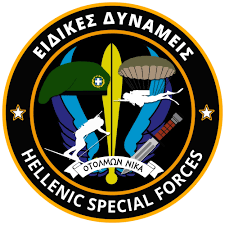
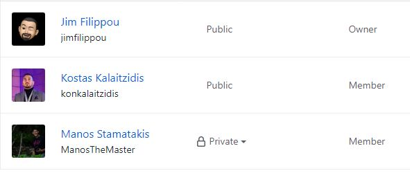

About Me
I'm 26 year old software developer. I aspire to initiate projects that have practical applications. Particularly if they involve time-saving. I am passionate about programming and I love learning. My goal is to make people's lives easier.
Resume
Education
Software Engineering and Intelligent Systems• Now
A true maths enthusiast, I enjoy computer science because it combines the language of numbers with the potential of creation. Programming makes unimaginable things possible, placing them within our grasp. I decided to specialise in software engineering and intelligent systems for that very reason.
Working experience
Android developer • 2017 - 2018
Groundifly is my pride and joy, a project very dear to me. I joined Groundifly team as an android developer when I was still a university student. It is a startup which aims to unite every sector of extreme sport industry by marrying the use of geolocation data to innovating marketing techniques. If you are interested in finding out more, you can download the app (for free) here , or see our promo video here!
Developer / TFS Data Analysis • 2017 - 2018
During this internship I gained valuable knowledge working on data analysis, collecting data from TFS Client and creating attractive graphs from them. I was introduced to big data and at the same time I expanded my skills in C#.
Developer / C# (MVC, Asp.NET) • May 2018 - December 2018
I was working there as Developer. I enjoyed very much the working enviroment and I was involved in 2 projects, Docutracks (Document, Case and Digital Signatures Management System) and in a AR technology mobile application.
Second Lieutenant/ Greek special forces • 2020 - 2022
I joined the Greek army to serve my duty as a military officer. Through out the difficult training I was starting to push my limits and I was addicted to it. Then I joined special forces and after months of excruciating training I finished my term with the rank of 2nd lieutenant, from the 1st squadron of paratroopers in the historic Maleme of Chania, Crete.
Developer• March 2022 - December 2022
I am working on digital signing and machine learning with Azure and also with Dynamics 365 of Microsoft. I analyze data with X++ and C#.
Developer• Janouary 2023 - Now
I am working for IBM via IKNOWHOW on web banking applications with C#.
Cool Projects
Creator - Project Leader• May 2020-now
An open source application that stores useful information for Computer Science students, so they can get their degree as soon as possible. We store old excersises, lessons and notes that are extremely helpful. Very useful throughout the quarantine period. With the valuable help of Dimitris Filippou and Konstantinos Kalaitzidis
One of the creators• May 2020-now
An open source application that connects students to their lessons through tele-learning. Very useful throughout the quarantine period. Creators also Dimitris Filippou and Konstantinos Kalaitzidis

Achivements
As a Student
• 3rd place at Mathematical Olympiad “Archimedes”
• 2nd place at National Microsoft Excel contest
• Awarded as Microsoft Specialist when I was 15 years old.
• 3rd place at NASA space apps challenge in Athens
Location, Year
Greece, 2015Greece, 2014
Greece, 2012
Greece, 2019
As an Entepreneur
• Ennovation Contest - 3rd phase
• Entrepreneurship Bootcamp Contest - achieved incubation
• Google Startup Launchpad Warsaw, Poland (Top 10 in Europe)
Dates
SEP 2017JUL 2017
OCT 2017
As an Athlete
• 22nd place at sailing, in the International Youth Championship
• 3rd place at Discus throw in the Youth(U20) National Championship
• 3rd place at Discus throw in the U23 National Championship
• 3rd place at Discus throw in the National Winter Throwing Championship
• 3rd place at Discus throw in the National Throwing Festival
• 3rd place at Discus throw in the National Winter Throwing Championship
Location, Year
Finland, 2012Serres, Greece 2016
Larisa, Greece 2017
Thessaloniki, Greece 2018
Tripoli, Greece 2018
Thessaloniki, Greece 2019